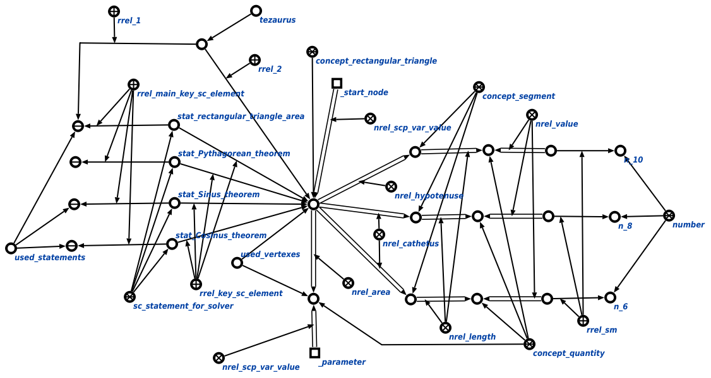

Задачей scp-программы применения стратегий решения задач является применение стратегий решения задач в рамках конкретной задачи. Первым входным параметром данной scp-программы является либо неизвестная величина или число, либо атомарная формула, истинность которой проверяется. Вторым входным параметром является узел графа условия, который на данный момент анализируется с позиции применения утверждений. Третьим входным параметром является множество вершин, которые уже были проанализированы в процессе обхода вершин графа условия. Четвертым входным параметром является множество применённых утверждений. Пятым входным параметром является узел декомпозиции решения задачи, куда будут занесены все успешно применённые sc-действия. Шестым входным параметром является множество, куда заносятся частично и успешно применённые sc-действия. Седьмым входным параметром является граф условия, в рамках которого производится обход вершин. В ходе выполнения программы явно указывается связь со следующими ключевыми узлами: запрос выполнения логического вывода; классами sc-действий, такими как успешно выполненное sc-действие, безуспешно выполненное sc-действие, частично выполненное sc-действие, инициированное sc-действие; абсолютными понятиями - sc-действие, sc-утверждение, которое обрабатывается решателем, sc-событие появления в памяти входящей дуги, атомарная формула, отношениями - значение*, последовательность действий*, атрибутами - ключевой sc-элемент', главный ключевой sc-элемент', характеризующими узел утверждения, а также порядковыми атрибутами - 1' и 2'. Результаты выполнения процедуры представлены ниже:
